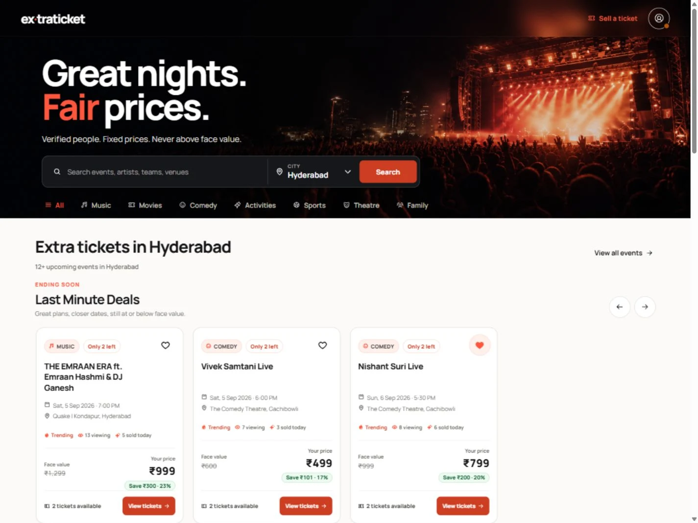

Lead with the night out
Concert imagery and a direct headline establish the experience. The search field sits in that same first view, so the visual promise has an immediate next step.
Great nights. A clearer way in.

View full captureEvent discovery competes for attention with location, pricing and availability. The landing experience needs to communicate the proposition quickly, then give a visitor a useful way to start searching.
I worked on the marketplace interface and frontend implementation, connecting the visual identity to event discovery, category navigation and listing cards in a React application.
React · Vite · React Router · Supabase
Concert imagery and a direct headline establish the experience. The search field sits in that same first view, so the visual promise has an immediate next step.
City selection and event categories provide context before visitors explore individual listings. Event cards bring timing, place and price into one scan.
A dark stage, orange accents and clear card structure connect the landing page to the rest of the marketplace. React Router handles the frontend navigation.
The capture shows the development interface with sample listings. The frontend uses React, Vite, React Router and Supabase, bringing event discovery, city selection and listing navigation into one consistent experience.
Visit ExtraTicket